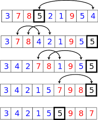

排序算法
- 冒泡排序
- 选择排序
- 插入排序
- 合并排序
- 快速排序
冒泡排序：
冒泡排序是最易懂的排序算法，但是效率较低，生产环境中很少使用
基本原理：
1、依次比较相邻的两个数，如果不符合排序规则，则调换两个数的位置。这样一边比较下来，能够保证最大（或最小）的数排在最后一位。
2、再对最后一位以外的数组，重复前面的过程，直至全部排序完成。

代码：
复杂度：
选择排序
基本原理：
选择排序（Selection Sort）与冒泡排序类似，也是依次对相邻的数进行两两比较。不同之处在于，它不是每比较一次就调换位置，而是一轮比较完毕，找到最大值（或最小值）之后，将其放在正确的位置，其他数的位置不变。在要排序的一组数中，选出最小（或者最大）的一个数与第1个位置的数交换；然后在剩下的数当中再找最小（或者最大）的与第2个位置的数交换，依次类推，直到第n-1个元素（倒数第二个数）和第n个元素（最后一个数）比较为止。
代码：
复杂度：
插入排序
基本原理：
插入排序（insertion sort）比前面两种排序方法都更有效率。它将数组分成“已排序”和“未排序”两部分，一开始的时候，“已排序”的部分只有一个元素，然后将它后面一个元素从“未排序”部分插入“已排序”部分，从而“已排序”部分增加一个元素，“未排序”部分减少一个元素。以此类推，完成全部排序。
代码：
复杂度：
合并排序
基本原理：
将两个已经排序的数组合并，要比从头开始排序所有元素来得快。因此，可以将数组拆开，分成n个只有一个元素的数组，然后不断地两两合并，直到全部排序完成。
代码
快速排序
基本原理：
先确定一个“基准”（pivot），将所有小于“基准”的值都放在该点的左侧，大于“基准”的值都放在该点的右侧，然后对左右两侧不断重复这个过程，直到所有排序完成。
步骤：
- 在数据集之中，选择一个元素作为”基准”（pivot）。
- 所有小于”基准”的元素，都移到”基准”的左边；所有大于”基准”的元素，都移到”基准”的右边。这个操作称为分区 (partition) 操作，分区操作结束后，基准元素所处的位置就是最终排序后它的位置。
- 对”基准”左边和右边的两个子集，不断重复第一步和第二步，直到所有子集只剩下一个元素为止。

代码：
复杂度：
随机快速排序
对于快速排序而言，当数组已经排好序，那么每次的分组操作都恰好有一个区域大小是0，也就是划分的遍历操作没有实质上的实现对半的重排；因此，在选择起始基准的时候，我们可以在数组内随机取一个下标的元素作为基准元素，那么这样一来，每个元素作为初始基准的概率都是一样的，也就避免了数组本身排序特性导致快排出现最差情况。
###